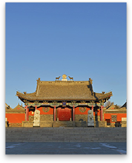

<!DOCTYPE html>
<html xmlns="http://www.w3.org/1999/xhtml">

	<head>
		<meta http-equiv="Content-Type" content="text/html; charset=utf-8" />
		<meta name="keywords" content="百度地图,百度地图API，百度地图自定义工具，百度地图所见即所得工具" />
		<meta name="description" content="百度地图API自定义地图，帮助用户在可视化操作下生成百度地图" />
		<meta name=renderer content=webkit>
		<title>百度地图API自定义地图</title>
		<!--引用百度地图API-->
		<script type="text/javascript" src="http://api.map.baidu.com/api?v=2.0&ak=0BHOFVd4GhCNDquSmn5RIZi0OB4L0WGw"></script>
		<!--<script type="text/javascript" src="http://api.map.baidu.com/library/Heatmap/2.0/src/Heatmap_min.js"></script>-->

	</head>

	<body>
		<!--百度地图容器-->
		<div style="width:700px;height:550px;border:#ccc solid 1px;font-size:12px" id="map"></div>

		<!--<p style="color:red;font-weight:600">地图生成工具基于百度地图JS api v2.0版本开发，使用请申请密匙。
      <a href="http://developer.baidu.com/map/index.php?title=jspopular/guide/introduction" style="color:#2f83c7" target="_blank">了解如何申请密匙</a>
      <a href="http://lbsyun.baidu.com/apiconsole/key?application=key" style="color:#2f83c7" target="_blank">申请密匙</a>
    </p>-->
	</body>
	<script type="text/javascript">
		// 百度地图API功能
		var sContent =
			"<h4 style='margin:0 0 5px 0;padding:0.2em 0'>贝子庙</h4>" +
			"" +
			"<p style='margin:0;line-height:1.5;font-size:13px;text-indent:2em'>贝子庙是藏传佛教圣地。它的规模，历来被称为锡林郭勒盟地区第一大寺，是锡林郭勒盟佛教文化的一大宝库，享有“北国名刹”声誉。贝子庙周边水草肥美，风光秀丽。圣洁的锡林河水在贝子庙西边，由南向北缓缓流去，如今它的两侧是繁华市区...</p>" +
			"</div>";
		//创建和初始化地图函数：
		function initMap() {
			createMap(); //创建地图
			setMapEvent(); //设置地图事件
			addMapControl(); //向地图添加控件
			addMapOverlay(); //向地图添加覆盖物
		}

		function createMap() {
			map = new BMap.Map("map", {
				mapType: BMAP_HYBRID_MAP
			});
			map.centerAndZoom(new BMap.Point(116.054273, 43.939407), 15);
			//  map.centerAndZoom(point, 15);             // 初始化地图，设置中心点坐标和地图级别
			map.enableScrollWheelZoom(); // 允许滚轮缩放

			function setGradient() {

				var gradient = {};
				var colors = document.querySelectorAll("input[type='color']");
				colors = [].slice.call(colors, 0);
				colors.forEach(function(ele) {
					gradient[ele.getAttribute("data-key")] = ele.value;
				});
				heatmapOverlay.setOptions({
					"gradient": gradient
				});
			}
			//判断浏览区是否支持canvas
			function isSupportCanvas() {
				var elem = document.createElement('canvas');
				return !!(elem.getContext && elem.getContext('2d'));
			}
		}

		function setMapEvent() {
			map.enableScrollWheelZoom();
			map.enableKeyboard();
			map.enableDragging();
			map.enableDoubleClickZoom()
		}

		function addClickHandler(target, window) {
			target.addEventListener("click", function() {
				target.openInfoWindow(window);
			});
		}

		function addMapOverlay() {}
		//向地图添加控件
		function addMapControl() {
			var scaleControl = new BMap.ScaleControl({
				anchor: BMAP_ANCHOR_BOTTOM_LEFT
			});
			scaleControl.setUnit(BMAP_UNIT_IMPERIAL);
			map.addControl(scaleControl);
			var navControl = new BMap.NavigationControl({
				anchor: BMAP_ANCHOR_TOP_LEFT,
				type: BMAP_NAVIGATION_CONTROL_LARGE
			});
			map.addControl(navControl);
			var overviewControl = new BMap.OverviewMapControl({
				anchor: BMAP_ANCHOR_BOTTOM_RIGHT,
				isOpen: true
			});
			map.addControl(overviewControl);
		}
		var map;
		initMap();

		//贝子庙
		var json_data1 = [
			[116.051383, 43.939707],
			[116.075988,43.956764],
			[116.111551, 42.201595]
		];
		var pointArray1 = new Array();
		//		var myIcon1 = new BMap.Icon("http://lbsyun.baidu.com/jsdemo/img/fox.gif", new BMap.Size(300, 157));
		var myIcon1 = new BMap.Icon("img/yibingfangkong.png", new BMap.Size(29, 34));
		for(var i = 0; i < json_data1.length; i++) {
			var marker1 = new BMap.Marker(new BMap.Point(json_data1[i][0], json_data1[i][1]), {
				icon: myIcon1
			}); // 创建点
			var infoWindow = new BMap.InfoWindow(sContent); // 创建信息窗口对象
			map.addOverlay(marker1); //增加点
			pointArray1[i] = new BMap.Point(json_data1[i][0], json_data1[i][1]);
			marker1.setAnimation(BMAP_ANIMATION_BOUNCE); //跳动的动画
			marker1.addEventListener("click", attribute);
		}
		map.setViewport(pointArray1);
		//获取覆盖物位置
		function attribute(e) {
			//			var p = e.target;
			//			alert("marker的位置是" + p.getPosition().lng + "," + p.getPosition().lat);
			this.openInfoWindow(infoWindow);
			//图片加载完毕重绘infowindow
			document.getElementById('imgDemo').onload = function() {
				infoWindow.redraw(); //防止在网速较慢，图片未加载时，生成的信息框高度比图片的总高度小，导致图片部分被隐藏

			}
		}
		//  116.080012,43.928515 生态植物园  116.061399,43.935059博物馆 116.07243,43.951182 清真寺

		var json_data2 = [
			[116.080012, 43.928515],
			[116.061399, 43.935059],
			[116.07243, 43.951182]
		];
		var pointArray2 = new Array();
		var myIcon2 = new BMap.Icon("img/baolishijian.png", new BMap.Size(29, 33));
		for(var i = 0; i < json_data2.length; i++) {
			var marker2 = new BMap.Marker(new BMap.Point(json_data2[i][0], json_data2[i][1]), {
				icon: myIcon2
			}); // 创建点
			map.addOverlay(marker2); //增加点
			pointArray2[i] = new BMap.Point(json_data2[i][0], json_data2[i][1]);
			marker2.setAnimation(BMAP_ANIMATION_BOUNCE); //跳动的动画
		}
		map.setViewport(pointArray2);
		
		var json_data3 = [
			[116.1115, 42.2015],
			[116.086336,43.910541], //湿地公园
			[116.099128,43.877072] //旅游度假村
		];
		var pointArray3 = new Array();
		var myIcon3 = new BMap.Icon("img/renqunzhiliu.png", new BMap.Size(29, 33));
		for(var i = 0; i < json_data3.length; i++) {
			var marker3 = new BMap.Marker(new BMap.Point(json_data3[i][0], json_data3[i][1]), {
				icon: myIcon3
			}); // 创建点
			map.addOverlay(marker3); //增加点
			pointArray3[i] = new BMap.Point(json_data3[i][0], json_data3[i][1]);
			marker3.setAnimation(BMAP_ANIMATION_BOUNCE); //跳动的动画
		}
		map.setViewport(pointArray3);

		//		var local = new BMap.LocalSearch(map, {
		//			renderOptions: {
		//				map: map
		//			}
		//		});
		//		local.searchInBounds("景区", map.getBounds());
		//
		//		map.addEventListener("dragend", function() {
		//			map.clearOverlays();
		//			local.searchInBounds("景区", map.getBounds());
		//		});
	</script>

</html>